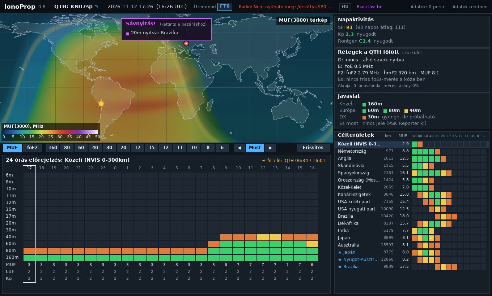
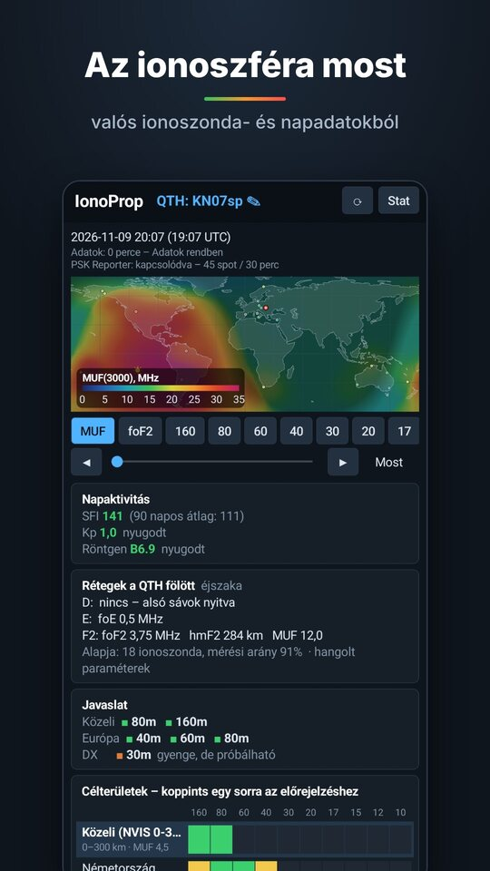
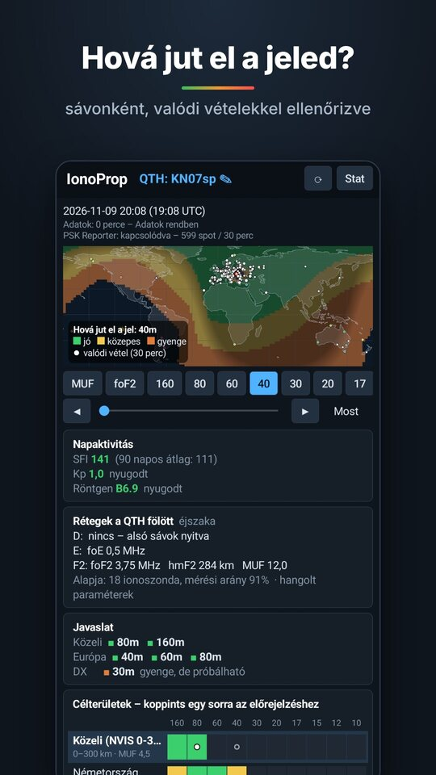
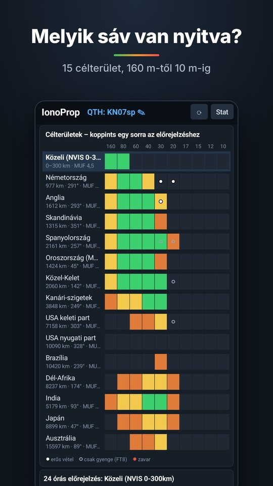
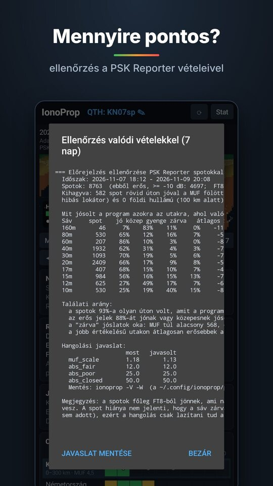

Melyik sáv megy most, és merre? Which band is open now, and where to?
Az IonoProp a világ ionoszondáinak friss méréseiből és a napadatokból kiszámolja az ionoszféra állapotát, és sávonként megmutatja, hová jut el a jeled. A valódi vételek (PSK Reporter) alapján azt is látod, egyezik-e a jóslat a valósággal. IonoProp takes live measurements from the world's ionosondes and solar data, models the ionosphere, and shows band by band where your signal can reach. Real spots from PSK Reporter show whether the prediction matches reality.

Mérésekből számol, nem átlagokbólBuilt on measurements, not monthly averages
Az adatok 15 percenként frissülnek: KC2G / GIRO ionoszondák, NOAA napfluxus, Kp-index, röntgenfluxus és Kp-előrejelzés. Ahol nincs közeli ionoszonda, ott becslés, ezt a program jelzi is. Data refreshes every 15 minutes: KC2G / GIRO ionosondes, NOAA solar flux, Kp index, X-ray flux and Kp forecast. Where there is no ionosonde nearby the value is an estimate, and the program says so.
Sávjavaslat célterületenkéntBand advice per target area
15 beépített célterület (Európa, USA, Japán, Ausztrália…), a 11 m-t és a 8 m-t is beleértve. Jó, közepes, gyenge, zárva.15 built-in target areas (Europe, USA, Japan, Australia…), 11 m and 8 m included. Good, fair, poor, closed.
VilágtérképWorld map
MUF- és foF2-térkép, vagy egy sávot kiválasztva: hová jut el ezen a jeled. Éjszakai árnyék, szürkevonal, ionoszondák, útvonal az ugrásokkal.MUF and foF2 maps, or pick a band to see where your signal reaches. Night shading, grey line, ionosondes, the path with its hops.
24 órás előrejelzés24-hour forecast
Bármelyik célra óránként, MUF-fal, LUF-fal és a NOAA Kp-előrejelzésével. Az időcsúszkával a térkép is előre lép.Hour by hour for any target, with MUF, LUF and the NOAA Kp forecast. The time slider moves the map ahead too.
Ellenőrzés valódi vételekkelChecked against real spots
Látod, hová jutott el ténylegesen jel a környékedről. A gyűjtött vételekből statisztika és hangolási javaslat készül.See where signals from your area actually got. Collected spots feed a statistic and a tuning suggestion.
Sporadikus ESporadic E
A rövid, a MUF fölötti vételekből és a közeli ionoszonda foEs-méréséből. Lila felhőként látszik a térképen.From short, above-MUF spots and the nearest ionosonde's foEs. Shown as purple clouds on the map.
Üzemmód szerintMode aware
A CW kb. 8 dB-lel, az FT8 kb. 16 dB-lel gyengébb jelet is visz, ezért velük több sáv nyitott.CW copes with about 8 dB, FT8 with about 16 dB weaker signals, so more bands stay open.
Saját célterületek, hosszú útYour own targets, long path
Lokátorral, hívójellel vagy prefixszel (kb. 250 prefix). A hosszú út a nagykör másik fele.By locator, callsign or prefix (about 250 prefixes). Long path follows the other half of the great circle.
RádióvezérlésRig control
Gépen jobb kattintás egy sávra, és a rádió átáll a sávra, a választott üzemmód szokásos frekvenciájára. Adásba nem kapcsol.On the desktop, right-click a band and the radio tunes there, to the usual frequency of the chosen mode. It never keys the transmitter.
Shack-kijelző, Raspberry PiShack display, Raspberry Pi
Teljes képernyő (F11), a térkép magától körbejár (MUF, foF2, sávok). Raspberry Pi-n kis kijelzőn is elfér, bekapcsoláskor magától indul.Full screen (F11) with a map that cycles by itself (MUF, foF2, bands). Fits small Raspberry Pi screens and starts on boot.
Riasztás sávnyitáskorBand-opening alerts
Es 10/8/6 m-en, F2 nyitás 8/6 m-en, vagy ha a saját célterületeid felé kinyílik egy sáv. Gépen felugró sáv, telefonon értesítés.Es on 10/8/6 m, F2 on 8/6 m, or a band opening towards your own targets. A pop-up on the desktop, a notification on the phone.
Android widgetAndroid widget
A kezdőképernyőn egy pillantással: SFI, Kp, röntgen és a sávjavaslat helyi, európai és DX irányba.On the home screen at a glance: SFI, Kp, X-ray and band advice for local, Europe and DX.
Magyarul és angolulHungarian and English
Egy gombnyomással vált. Telefonon első indításkor a telefon nyelve dönt.Switch with one click. On the phone, the phone's language decides on first start.
Zavarok jelzéseDisturbance warnings
Napkitörés (D-réteg elnyelés) és geomágneses vihar esetén a program jelzi, mely utakat érinti.On solar flares (D-layer absorption) and geomagnetic storms the program marks the affected paths.
A telefonon is ugyanaz a számolásThe same engine on the phone
Az Android-app ugyanazt a C-magot használja, mint az asztali program, így ugyanazt is mutatja.The Android app runs the same C core as the desktop program, so it shows the same results.




Ingyenes, telepítés nélkül is futFree, runs without installing
Jelenlegi változat: 0.9 (Android: 0.8). Nincs regisztráció, nincs reklám, a lokátorod a gépeden marad.Current version: 0.9 (Android: 0.8). No registration, no ads, your locator stays on your device. Korábbi változatokEarlier versions
Windows
Zip-fájl: kicsomagolod, és elindítod az IonoProp.exe-t. Telepíteni nem kell. Ha a SmartScreen figyelmeztet: „További információ” → „Futtatás mindenképp”.A zip file: unpack it and start IonoProp.exe. No installation. If SmartScreen warns: “More info” → “Run anyway”.
Letöltés (zip)Download (zip)Linux
Forráscsomag, egy paranccsal lefordul:Source package, builds with one command:
sudo apt install build-essential \ libcurl4-openssl-dev libx11-dev \ libfreetype-dev libmosquitto-dev make && ./ionoprop-gui
Raspberry Pi shack-kijelzőnek: make autostart, és bejelentkezéskor teljes képernyőn indul.For a Raspberry Pi shack display: make autostart, and it starts full screen on login.
Android
Az app a Google Play zártkörű tesztelésében van. A nyilvános megjelenéshez 12 tesztelő kell, aki 14 napig a telefonján tartja. Jelentkezz, és küldöm a meghívót!The app is in closed testing on Google Play. Public release needs 12 testers who keep it on their phone for 14 days. Sign up and I'll send you the invite!
Jelentkezés e-mailben: qsl@hg0mv.hu, vagy üzenetben HG0MV-nek. A Google-fiókod e-mail-címe kell hozzá.Sign up by e-mail: qsl@hg0mv.hu, or send a message to HG0MV. I need the e-mail address of your Google account.
- Első alkalommal a telefon engedélyt kér:
Ismeretlen alkalmazások telepítése
. Engedélyezd annak a böngészőnek, amivel letöltötted. - Ha a Play Protect figyelmeztet, válaszd a
Telepítés mindenképp
lehetőséget (néha aRészletek
alatt van). - Az app nem gyűjt adatot, és reklám sincs benne.
- The first time, the phone asks for permission to
Install unknown apps
. Allow it for the browser you downloaded with. - If Play Protect warns you, choose
Install anyway
(sometimes underMore details
). - The app collects no data and has no ads.
Mi történt eddigRelease history
- Teljes képernyős shack-kijelző mód (F11), körbejáró térkép
- Raspberry Pi támogatás: kis kijelzők, automatikus indítás
- Bekapcsoláskor percenként újrapróbálja a letöltést, ha még nincs hálózat
- Full-screen shack display mode (F11), cycling map
- Raspberry Pi support: small screens, start on boot
- Retries the download every minute at startup until the network is up
- Riasztás sávnyitáskor (gépen felugró sáv, telefonon értesítés)
- Android kezdőképernyő-widget
- Angol nyelvű felület
- Éles megjelenítés nagyított Windows-kijelzőn
- Pontosabb foF2 naplementekor és napkeltekor
- Band-opening alerts (desktop pop-up, phone notification)
- Android home screen widget
- English user interface
- Sharp display on scaled Windows screens
- More accurate foF2 around sunset and sunrise
- Saját célterületek lokátorral, hívójellel vagy prefixszel
- SSB, CW és FT8 üzemmód
- Szürkevonal, napkelte / napnyugta, hosszú út
- 11 m-es sáv, Yaesu CAT rádióvezérlés
- Own targets by locator, callsign or prefix
- SSB, CW and FT8 modes
- Grey line, sunrise / sunset, long path
- 11 m band, Yaesu CAT rig control
- Sporadikus E: valódi vételekből és ionoszonda-mérésből
- Jobb modell magas MUF-ra (téli és egyenlítői anomália)
- NOAA Kp-előrejelzés
- Sporadic E from real spots and ionosonde data
- Better model for high MUFs (winter and equatorial anomaly)
- NOAA Kp forecast
- 8 m és 6 m, MUF-skála 50 MHz-ig
- Windows-változat, Android-app
- 8 m and 6 m, MUF scale up to 50 MHz
- Windows version, Android app
Jó tudniGood to know
Mennyire pontos?How accurate is it?
Becslés, nem garancia. Európában a legpontosabb, mert itt sok ionoszonda mér. A PSK Reporter-ellenőrzéssel magad is megnézheted, mennyire talál a te QTH-dról.It is an estimate, not a guarantee. It is most accurate in Europe, where many ionosondes measure. With the PSK Reporter check you can see how well it works from your own QTH.
Előre jelzi a sporadikus E-t?Does it forecast sporadic E?
Nem, az Es nem jelezhető előre. A program az éppen zajló nyitást mutatja, és szól, ha kinyílik.No, Es cannot be forecast. The program shows openings as they happen, and alerts you when one starts.
Milyen adatot küld el rólam?What does it send about me?
Semmi személyeset. Bekapcsolt PSK Reporternél a szerver csak azt tudja meg, melyik 4 karakteres lokátornégyzet környékéről kérsz vételeket. A hívójeledet és a pontos lokátort nem küldi el.Nothing personal. With PSK Reporter on, the server only learns which 4-character grid squares you ask spots for. Your callsign and exact locator are never sent.
Honnan jönnek az adatok?Where does the data come from?
KC2G (prop.kc2g.com), GIRO ionoszonda-hálózationosonde network, NOAA SWPC, PSK Reporter, Natural Earth. Köszönet nekik!Many thanks to them!